Installation Guide
When opening the "BatLive_Setup" file, a warning will appear.
This is a standard Windows protection.
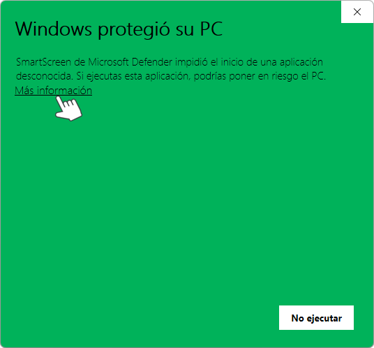
Click "More info". Then click "Run anyway" to continue the installation.
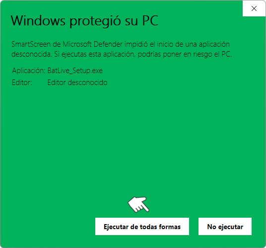
Select your language.
The BatLive interface is available in 7 languages and can be changed later.
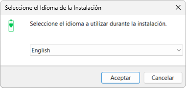
Read the agreement (EULA). Select "I accept the agreement" and click "Next".
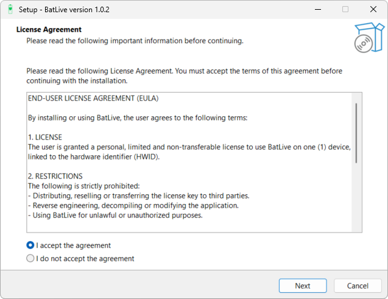
Choose a folder and click "Next".
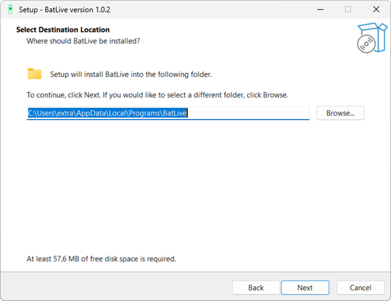
Leave the default name or change it. Then click "Next".
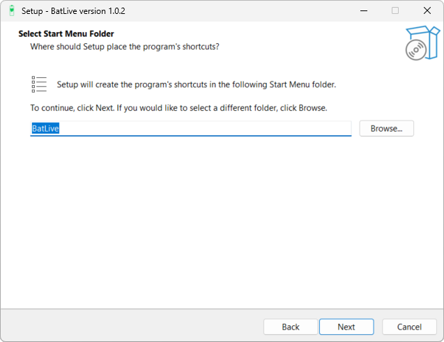
To create a BatLive desktop icon, check the box. Then click "Next".
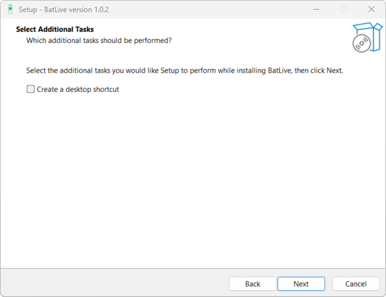
Review the installation settings and click "Install".
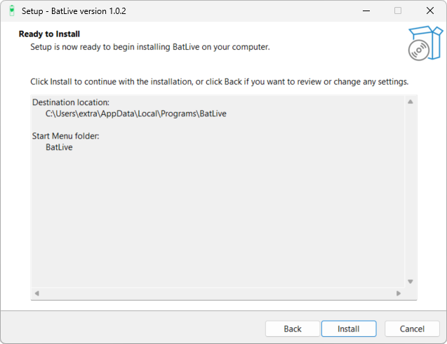
Wait a few seconds until BatLive is installed.
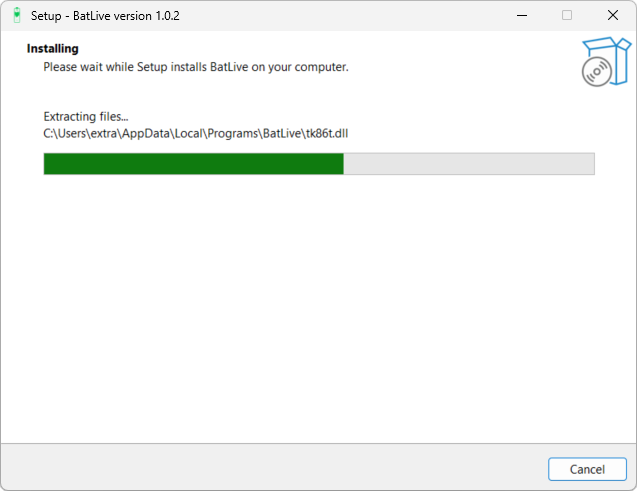
Leave "Launch BatLive" checked and click "Finish".
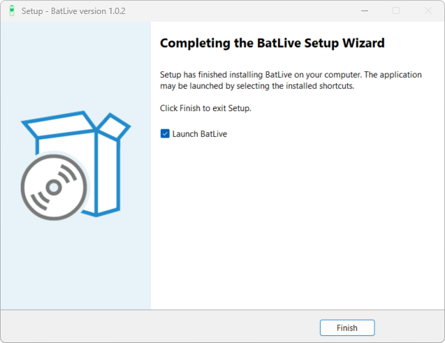
Activate the license key received by email after purchase.
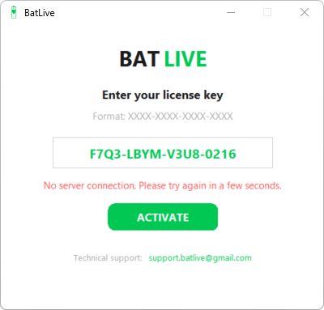
Note: During the first launch and license activation, the message "No server connection" may appear. Wait a few seconds and try again.
Guía de instalación
Al abrir el archivo «BatLive_Setup» aparecerá un aviso.
Es una protección estándar de Windows.
Pulse «Más información».
Después «Ejecutar de todas formas» para continuar con la instalación.
Seleccione el idioma.
La interfaz de BatLive está disponible en 7 idiomas y puede cambiarse más adelante.
Lea el acuerdo (EULA).
Seleccione «Acepto los términos del acuerdo» y haga clic en «Siguiente».
Elija carpeta y haga clic en «Siguiente».
Deje el nombre predeterminado o cámbielo.
Después, haga clic en «Siguiente».
Para crear un icono de BatLive en el escritorio, marque la casilla.
Después, haga clic en «Siguiente».
Revise la configuración y haga clic en «Instalar».
Espere unos segundos hasta que BatLive se instale.
Deje marcada la opción «Ejecutar BatLive» y haga clic en «Finalizar».
Active la clave de licencia recibida por correo tras la compra.
Nota: Durante el primer inicio y la activación de la licencia puede aparecer el mensaje «Sin conexión al servidor». Espere unos segundos y vuelva a intentarlo.
Инструкция по установке
При открытии файла «BatLive_Setup» появится предупреждение.
Это стандартная защита Windows.
Нажмите «Подробнее».
Затем чтобы продолжить установку— «Выполнить в любом случае».
Выберите язык. Интерфейс BatLive доступен на 7 языках, его можно изменить позже.
Прочитайте соглашение (EULA).
Выберите «Я принимаю условия соглашения» и нажмите «Далее».
Выберите папку и нажмите «Далее».
Оставьте имя по умолчанию или измените его. Затем нажмите «Далее».
Для создания иконки BatLive на рабочем столе поставьте галочку.
Затем нажмите «Далее».
Проверьте параметры установки и нажмите «Установить».
Подождите несколько секунд, пока BatLive установится.
Оставьте отмеченным пункт «Запустить BatLive» и нажмите «Готово».
Активируйте лицензионный ключ, полученный по электронной почте после покупки.
Примечание: При первом запуске и активации лицензии может появиться сообщение «Нет подключения к серверу». Подождите несколько секунд и повторите попытку.
Guide d'installation
Lors de l'ouverture du fichier «BatLive_Setup», un avertissement s'affichera.
Il s'agit d'une protection standard de Windows.
Cliquez sur «Informations complémentaires».
Puis sur «Exécuter quand même» pour continuer l'installation.
Choisissez votre langue.
L'interface de BatLive est disponible en 7 langues et peut être modifiée ultérieurement.
Lisez le contrat (EULA).
Sélectionnez «J'accepte les termes du contrat» puis cliquez sur «Uivant».
Choisissez un dossier puis cliquez sur «Suivant».
Conservez le nom par défaut ou modifiez-le. Cliquez ensuite sur «Suivant».
Pour créer une icône BatLive sur le bureau, cochez la case. Cliquez ensuite sur «Suivant».
Vérifiez les paramètres d'installation puis cliquez sur «Installer».
Patientez quelques secondes le temps que BatLive s'installe.
Laissez cochée l'option «Lancer BatLive», puis cliquez sur «Terminer».
Activez la clé de licence reçue par e-mail après l'achat.
Remarque : Lors du premier démarrage et de l'activation de la licence, le message «Pas de connexion au serveur» peut apparaître. Patientez quelques secondes, puis réessayez.
Installationsanleitung
Beim Öffnen der Datei „BatLive_Setup" erscheint eine Warnmeldung.
Dies ist ein standardmäßiger Windows-Schutz.
Klicken Sie auf „Weitere Informationen".
Danach auf „Trotzdem ausführen", um die Installation fortzusetzen.
Wählen Sie Ihre Sprache.
Die BatLive-Oberfläche ist in 7 Sprachen verfügbar und kann später geändert werden.
Lesen Sie die Vereinbarung (EULA).
Wählen Sie „Ich akzeptiere die Vereinbarung" und klicken Sie auf „Weiter".
Wählen Sie einen Ordner und klicken Sie auf „Weiter".
Lassen Sie den Standardnamen oder ändern Sie ihn. Klicken Sie anschließend auf „Weiter".
Um ein BatLive-Symbol auf dem Desktop zu erstellen, aktivieren Sie das Kontrollkästchen. Klicken Sie anschließend auf „Weiter".
Überprüfen Sie die Einstellungen und klicken Sie auf „Installieren".
Warten Sie einige Sekunden, bis BatLive installiert ist.
Lassen Sie „BatLive starten" aktiviert und klicken Sie auf „Fertigstellen".
Aktivieren Sie den per E-Mail nach dem Kauf erhaltenen Lizenzschlüssel.
Hinweis: Beim ersten Start und der Lizenzaktivierung kann die Meldung „Keine Verbindung zum Server" erscheinen. Warten Sie einige Sekunden und versuchen Sie es erneut.
Guia de instalação
Ao abrir o ficheiro «BatLive_Setup», aparecerá um aviso.
Esta é uma proteção padrão do Windows.
Clique em «Mais informações».
Depois em «Executar mesmo assim» para continuar a instalação.
Selecione o idioma.
A interface do BatLive está disponível em 7 idiomas e pode ser alterada mais tarde.
Leia o contrato (EULA). Selecione «Aceito os termos do contrato» e clique em «Seguinte».
Escolha uma pasta e clique em «Seguinte».
Mantenha o nome predefinido ou altere-o. Depois clique em «Seguinte».
Para criar um ícone do BatLive no ambiente de trabalho, marque a caixa.
Depois clique em «Seguinte».
Verifique as definições e clique em «Instalar».
Aguarde alguns segundos até o BatLive ser instalado.
Deixe marcada a opção «Executar BatLive» e clique em «Concluir».
Ative a chave de licença recebida por e-mail após a compra.
Nota: Durante o primeiro arranque e a ativação da licença, poderá surgir a mensagem «Sem ligação ao servidor». Aguarde alguns segundos e tente novamente.
Guida all'installazione
Aprendo il file «BatLive_Setup» verrà visualizzato un avviso.
Si tratta di una protezione standard di Windows.
Fare clic su «Ulteriori informazioni».
Poi su «Esegui comunque» per continuare l'installazione.
Selezionare la lingua.
L'interfaccia di BatLive è disponibile in 7 lingue e può essere modificata in seguito.
Leggere il contratto (EULA).
Selezionare «Accetto i termini del contratto» e fare clic su «Avanti».
Scegliere una cartella e fare clic su «Avanti».
Lasciare il nome predefinito oppure modificarlo. Fare quindi clic su «Avanti».
Per creare un'icona di BatLive sul desktop, selezionare la casella.
Fare quindi clic su «Avanti».
Controllare le impostazioni e fare clic su «Installa».
Attendere alcuni secondi finché BatLive non è installato.
Lasciare selezionata l'opzione «Avvia BatLive» e fare clic su «Fine».
Attivare la chiave di licenza ricevuta via e-mail dopo l'acquisto.
Nota: Durante il primo avvio e l'attivazione della licenza potrebbe comparire il messaggio «Nessuna connessione al server». Attendere qualche secondo e riprovare.